India's rapid expansion toward 500 GW of non-fossil fuel capacity by 2030 has positioned Battery Energy Storage Systems (BESS) as critical infrastructure for grid stability and renewable energy integration. Recognizing this strategic importance, the government has implemented a comprehensive suite of policies, financial incentives, and regulatory frameworks designed to accelerate BESS deployment across the country. These measures span direct subsidies, manufacturing support, tariff mechanisms, transmission incentives, and mandate-based obligations that collectively shape India's emerging energy storage landscape.
Viability Gap Funding Scheme: The Cornerstone of BESS Support
The most significant policy intervention is the Viability Gap Funding (VGF) Scheme, approved by the Union Cabinet in September 2023, which provides the foundation for large-scale BESS deployment. This scheme offers up to 40 percent of the capital cost as budgetary support to make BESS projects financially viable, a critical measure given the capital-intensive nature of energy storage systems.
The original VGF scheme targeted 4,000 MWh of BESS capacity by 2030-31 with an initial budget allocation of INR 94 billion (US$1.129 billion), including INR 37.6 billion in budgetary support. However, recognizing declining battery costs, the government substantially expanded the program in 2025. As of June 2025, the VGF scheme now covers 13.2 GWh of BESS capacity within the original budgetary envelope, demonstrating how technology cost reductions have increased the scheme's reach without requiring additional funding. VGF disbursement occurs in five installments aligned with project implementation stages: 10 percent at financial closure, 45 percent upon commissioning, and 15 percent annually for three years post-commissioning.
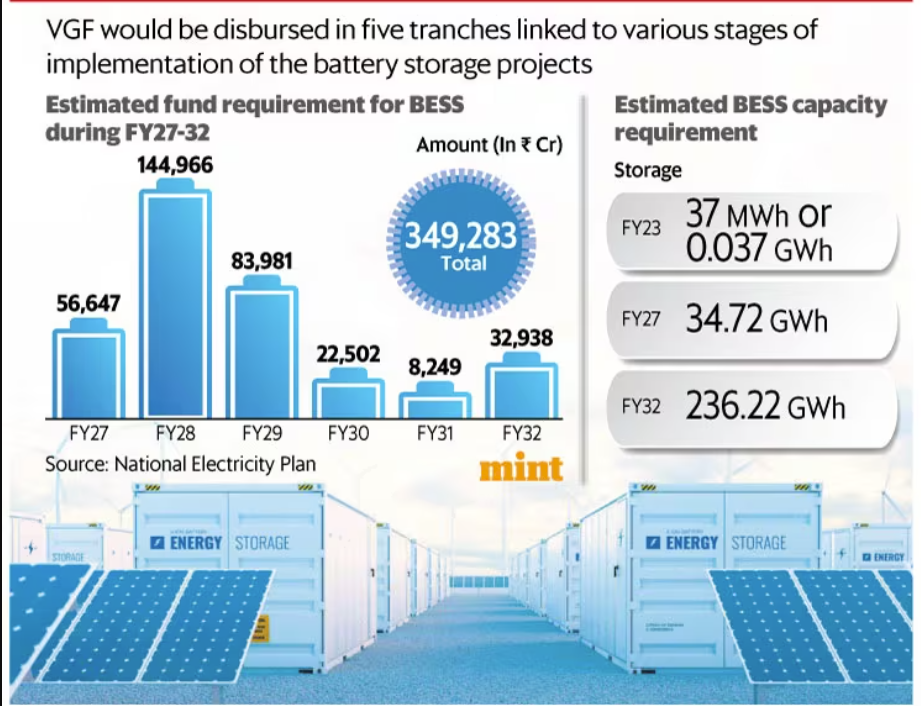
The scheme targets an ambitious Levelized Cost of Storage (LCoS) of INR 5.50-6.60 per kilowatt-hour (kWh), making stored renewable energy economically competitive for managing peak power demand nationally. A minimum of 85 percent of project capacity is reserved for power distribution companies (DISCOMs), ensuring the benefits directly enhance renewable energy integration and grid reliability.
Expanded PSDF Scheme: Additional ₹5,400 Crore Investment
Building on the VGF success, the Ministry of Power Govt of India launched an additional scheme in June 2025 through the Power System Development Fund (PSDF), allocating ₹5,400 crores to support 30 GWh of BESS capacity at a subsidized rate of ₹18 lakhs per MWh. This separate tranche targets state-level energy storage requirements and NTPC Limited operations, with 25 GWh allocated to 15 states and 5 GWh to national entities. This dual-scheme approach provides complementary pathways for different stakeholder categories—central entities, state utilities, and independent power producers—to access financial support.
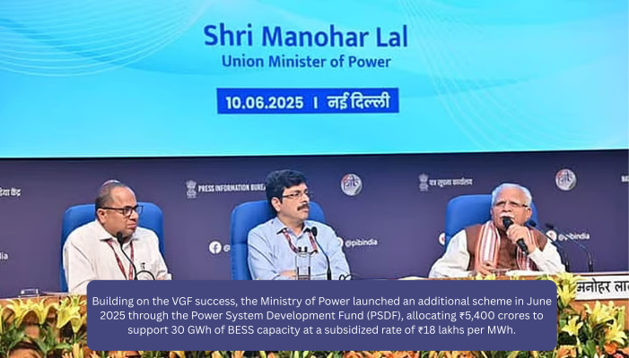
Energy Storage Obligation: Mandating Storage Integration
The government has embedded energy storage into its core policy framework through the Energy Storage Obligation (ESO), introduced alongside the Renewable Purchase Obligation. This mandate requires electricity distributors and obligated entities to source a minimum percentage of energy through renewable energy coupled with storage systems, with the obligation scaling progressively from 1 percent in FY 2023-24 to 4 percent by FY 2029-30. This approach ensures sustained market demand for BESS even as costs decline, creating a structural pull for storage capacity across the country.
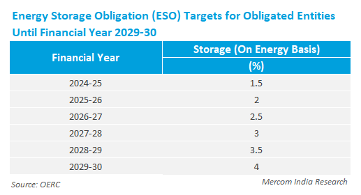
Production-Linked Incentive (PLI) for Battery Manufacturing
Recognizing that BESS deployment requires indigenous manufacturing capacity, the government approved the Production Linked Incentive (PLI) Scheme for Advanced Chemistry Cell (ACC) Battery Storage with a budgetary outlay of ₹18,100 crores to support 50 GWh of ACC manufacturing capacity. The scheme is technology-agnostic, allowing beneficiary firms to choose suitable battery chemistries and configurations for diverse applications spanning both stationary storage and electric vehicles.
Four companies were initially selected in March 2022—Reliance New Energy Solar Limited, Ola Electric Mobility Private Limited, Hyundai Global Motors Company Limited, and Rajesh Exports Limited—to establish facilities within two years, with incentives disbursed over five years on battery sales. In September 2024, Reliance Industries was additionally awarded 10 GWh of ACC capacity under the scheme's re-bidding process, reflecting strong industrial interest and the program's expansion. This manufacturing push directly reduces India's import dependence and positions the country as a global battery manufacturing hub, essential for achieving long-term cost competitiveness.
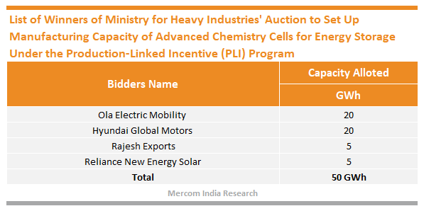
Tariff and Regulatory Framework: CERC's Integrated Energy Storage System Rules
A watershed regulatory development occurred in December 2025 when the Central Electricity Regulatory Commission (CERC) issued a comprehensive framework for Integrated Energy Storage Systems (IESS), formally recognizing storage as a regulated asset within generating stations and transmission networks. This framework resolves nearly a decade of regulatory ambiguity and establishes dedicated tariff mechanisms, technical norms, and operational rules that place storage on par with generation and transmission assets.
The CERC framework specifies normative operational benchmarks including 85 percent round-trip efficiency, 90 percent availability, 5 percent auxiliary consumption, and 12-year depreciation for battery assets, reducing the uncertainty that has deterred lenders. Importantly, the framework permits supplementary tariff mechanisms through fixed storage charges and energy charges filed within 30 days of commercial operation, ensuring rapid cost recovery for investors. The regulation also introduces an incentive of ₹0.25 per kWh for discharge exceeding normative round-trip efficiency, encouraging operational excellence.

For transmission-linked storage, the CERC framework empowers transmission licensees to install grid-side systems for reliability enhancement and transmission deferral, with revenues from storage services reducing annual transmission charges. This architectural change enables storage to function as a standalone regulated business rather than as a mere attachment to generation or transmission assets.
ISTS Charge Waiver: De-risking Transmission Costs
The government has maintained the 100 percent waiver of Inter-State Transmission System (ISTS) charges for BESS and renewable energy projects, a critical cost-reduction measure for developers. Initially extended multiple times since 2016, the waiver was most recently renewed in June 2025 for co-located BESS projects (BESS and renewables at the same ISTS substation) commissioned by June 30, 2028. This targeted extension acknowledges the longer lead times required for BESS projects and recognizes that transmission cost relief is essential for achieving the Levelized Cost of Storage targets embedded in VGF schemes.
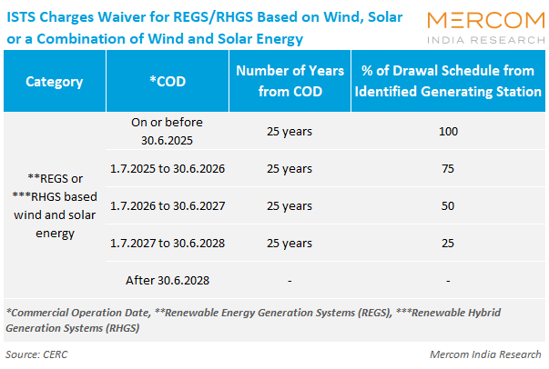
For non-co-located projects, ISTS charge reductions apply according to extant Ministry of Power orders and CERC regulations, with a graduated phase-in beginning July 2025. This waiver effectively removes a significant operational cost barrier, improving project returns and bankability for both standalone and hybrid renewable-storage configurations.
Technical Standards and Grid Integration Requirements
The government has integrated BESS into technical standards for grid connectivity through CEA (Central Electricity Authority) amendments (2023, fully enforceable from March 2025), mandating that renewable energy, hybrid, and BESS projects demonstrate grid code compliance through detailed simulations at the Point of Interconnection. Additionally, in February 2025, the CEA issued a technical advisory recommending the integration of a minimum 10 percent BESS of solar project capacity (two-hour duration) for all new solar tenders, effectively embedding storage into future renewable procurement. This advisory was subsequently endorsed by the Ministry of Power and communicated to Renewable Energy Implementing Agencies for compliance, signaling a structural shift toward hybrid renewable-storage projects.
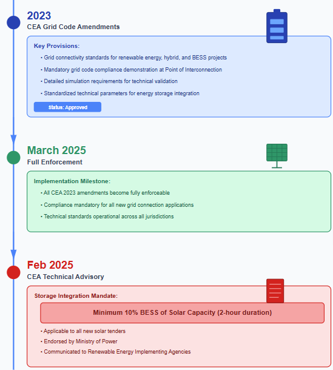
Manufacturing Incentives and Supply Chain Support
Beyond the PLI scheme, the government provides targeted customs duty exemptions on battery components and raw materials. The Union Budget 2024-25 extended basic customs duty (BCD) exemption on lithium-ion cell parts and specified battery pack production components until March 31, 2026, while exempting lithium, copper, and cobalt from customs duty entirely. These exemptions reduce the cost of battery manufacturing and assembly, supporting the competitiveness of domestically produced BESS systems.
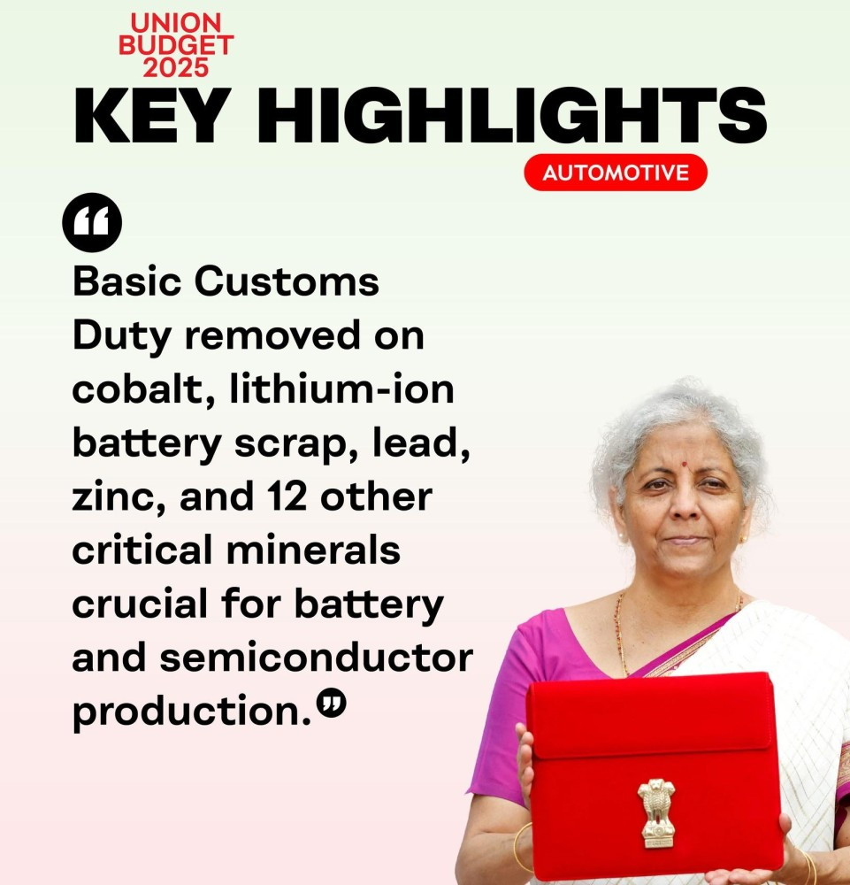
The Central Electricity Authority has further proposed incentives including tax breaks, capital subsidies, R&D support, and government-backed financing mechanisms for domestic battery manufacturers. These recommendations emphasize fostering skill development programs and establishing testing and certification facilities within India to ensure quality and innovation in domestically manufactured components, creating a self-sustaining ecosystem for battery storage.
Tax and GST Considerations
While GST on lithium-ion batteries currently stands at 28 percent, the India Energy Storage Alliance (IESA) has advocated for uniform 5 percent GST on BESS regardless of technology, aligned with the treatment afforded to electric vehicles. This advocacy reflects ongoing efforts to improve the cost competitiveness of battery storage systems relative to other grid services and infrastructure investments.
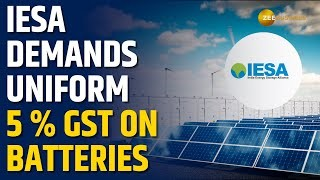
National Framework for Energy Storage Systems
The National Framework for Promoting Energy Storage Systems (August 2023) provides a comprehensive policy roadmap, establishing quantum of storage need, detailing VGF provisions, specifying bidding guidelines for competitive procurement, and setting BESS obligation targets for states. The framework explicitly permits transmission licensees to install grid-side storage for reliability and transmission deferral, with connection to inter-state transmission prioritized based on national grid planning integration.
Market Development and Competitive Bidding
The government has operationalized BESS deployment through transparent competitive bidding processes, with the Ministry of Power notifying bidding guidelines for BESS procurement in March 2022. These guidelines establish the framework for Solar Energy Corporation of India (SECI) and other implementing agencies to conduct reverse-bidding auctions, driving down costs through competition while ensuring project bankability. The first SECI tender for 500 MW/1,000 MWh of BESS achieved competitive tariffs, demonstrating the effectiveness of this market-based approach.
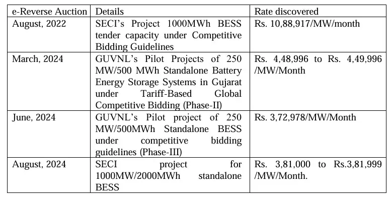
State-Level Policy Implementation
While central government policies provide the overarching framework, states including Rajasthan, Tamil Nadu, Karnataka, Gujarat, Maharashtra, Telangana, Bihar, and Kerala are implementing localized BESS deployment strategies. For example, states allocate VGF-backed capacity through tailored procurement, with some states like Uttar Pradesh receiving 2,500 MWh under the original VGF scheme and an additional 1,500 MWh under the PSDF scheme, enabling state-level energy storage requirements to be met while generating revenue for state utilities and distributors.
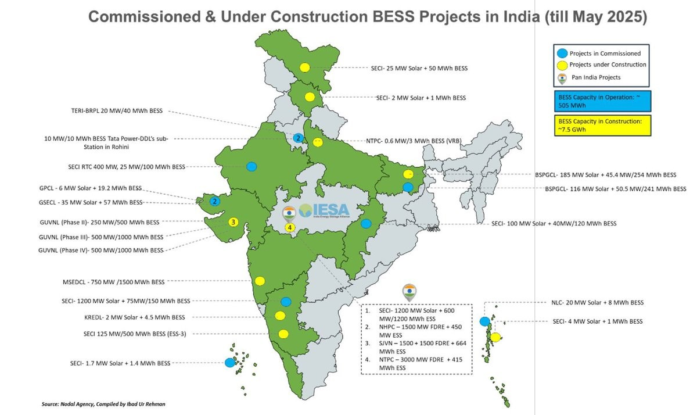
Challenges and Evolving Policy Responses
Despite these comprehensive measures, certain challenges persist. GST and customs duty structures remain higher than ideal for promoting BESS competitiveness, with IESA and industry stakeholders advocating for 5 percent uniform GST treatment. The recent CERC regulatory sandbox provision—allowing experimentation with innovative storage technologies and business models at costs up to 0.5 percent of annual fixed costs or ₹100 crores annually—signals government openness to addressing emerging challenges through adaptive regulation.
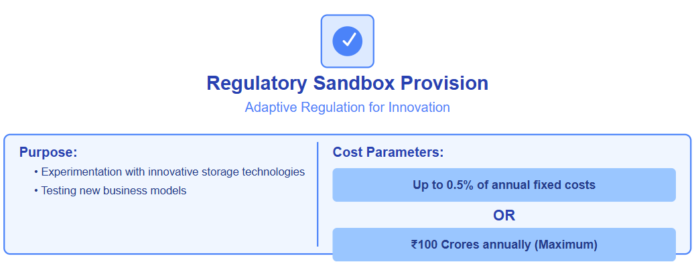
Conclusion: A Holistic Policy Ecosystem
The Indian government's approach to supporting BESS deployment integrates direct financial support (VGF and PSDF schemes), manufacturing incentives (PLI for battery cells), regulatory clarity (CERC IESS framework), transmission cost relief (ISTS waivers), mandated demand (ESO), and technical standardization into a coherent policy ecosystem. With over ₹91 billion committed across VGF and PSDF schemes alone, coupled with ₹18,100 crores in PLI support for manufacturing, and major recent regulatory reforms, India has created conditions for scaling utility-scale BESS to meet the 411 GWh storage requirement projected by the Central Electricity Authority by 2032. These policies collectively position BESS as central to India's energy transition, transforming renewable energy from variable to dispatchable power while strengthening grid flexibility and security.